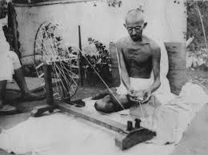

Her's timeline of Mahatma Gandhi's life:
- 1869: Mohandas Karamchand Gandhi is born on October 2 in Porbandar, British India.
- 1888: Gandhi travels to London to study law.
- 1893: Gandhi goes to South Africa to work as a lawyer. It is in South Africa that he becomes involved in the civil rights movement.
- 1915: Gandhi returns to India and becomes a leader in the Indian National Congress, advocating for nonviolent resistance against British rule.
- 1919: The Jallianwala Bagh massacre occurs, leading to widespread protests against British rule.
- 1930: Gandhi launches the Salt March, a 240-mile protest against British salt taxes.
- 1942: The Quit India Movement is launched, demanding an end to British rule in India.
- 1947: India gains independence from British rule on August 15.
- 1948: On January 30, Mahatma Gandhi is assassinated by Nathuram Godse in New Delhi. His death marks the end of an era in Indian history.
Famous Quote
"You must be the change you wish to see in the world."